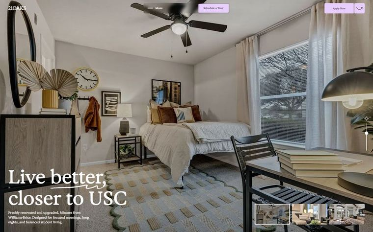
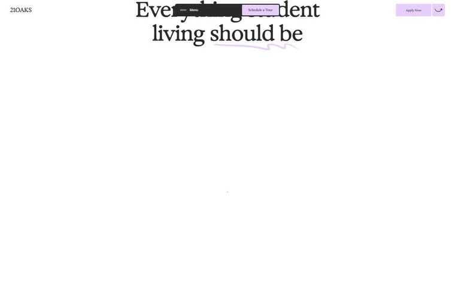
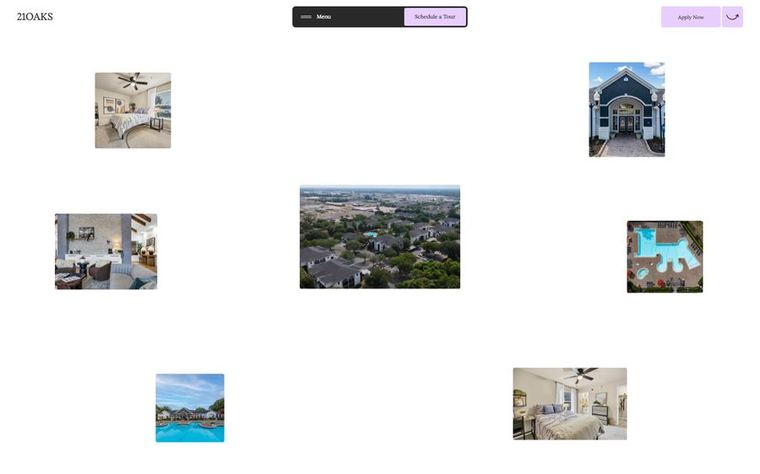

1. 21 Oaks
21oaks.orgТёплый жилой лайфстайл: страница построена вокруг больших фотографий реальных квартир, а не абстракции — сразу веришь, что это можно снять. Палитра светлая и молочная (белый фон #FFF, текст почти-чёрный #292929) с мягкими акцентами: лавандовый #E8CEFF на кнопках, пудрово-розовый #FEB7B9 и песочный #F3EDE6 на секциях, тёмный #121214 для контраста. Типографика одна на всё — контрастная антиква Exposure (H1 72px, светлое начертание), плюс рукописные лавандовые подчёркивания-росчерки под ключевыми словами; сетка спокойная, центрированная, много воздуха.
Первый экран. Полноэкранное фото реальной спальни (без видео — видео Mux подгружается ниже), поверх — крупная антиква «Live better, closer to USC» с рукописным подчёркиванием и коротким абзацем-подзаголовком. Предлагаются сразу два действия: лавандовая «Apply Now» в правом верхнем углу и «Schedule a Tour» в центральной капсуле — то есть записаться на просмотр.
Анимации (7)
- Пиннинг секции: заголовок замирает, а под ним из одной точки в центре разлетаются и вырастают 8 фотографий квартир и территории — на моих кадрах видно и стадию «точка», и стадию «россыпь»
- Постепенное появление блоков по скроллу через ScrollTrigger: на 1.2 экрана заголовок уже виден, а контент под ним ещё не проявился
- Плавная инерционная прокрутка Lenis — вся страница едет с подтормаживанием, отсюда ощущение дорогого
- Рукописный лавандовый росчерк дорисовывается под словом в заголовке (SVG-линия, появляется после текста)
- Мигание лампы в герое (CSS-кейфрейм lampFlicker) плюс вертикальный ползунок-диммер справа — микровзаимодействие «включи свет в комнате»
- Мини-галерея превью в правом нижнем углу героя (splide-карусель) — кадры сменяются, показывая другие комнаты
- Плавающая тёмная капсула меню по центру шапки с лавандовой кнопкой «Schedule a Tour», не уезжающей при скролле
Что забрать (5)
- Персистентная пара CTA в шапке: «Записаться на просмотр» (основное, цветная плашка) + вторая кнопка — она едет с пользователем все 17 экранов и снимает вопрос «а как связаться»
- Карточки объектов с жёсткой сеткой фактов: статус «Available», спальни, санузлы, площадь, код планировки, цена и кнопка «Explore Details» — ровно та структура, что нужна для аренды в Дананге (только цена в USD/VND и «свободно с такой-то даты»)
- Разлёт фотографий из точки на пиннинге — идеальный способ показать «квартира + бассейн + вид + район» одним движением вместо скучной галереи
- Секции «How it Works», отзывы жильцов и FAQ в конце — снимают возражения экспата, который снимает удалённо и боится обмана
- Один шрифт-антиква на всю страницу плюс рукописный акцент: даёт характер без зоопарка гарнитур и легко тянет кириллицу, если брать аналог
Чего избегать
- Страница на 17 экранов и 15 000 px — для агентства это слишком длинный путь до заявки; форму захвата надо ставить и в середине, а не только внизу
- Есть горизонтальный вылет (scrollWidth 1530 при вьюпорте 1440) — на мобильном такие разлетающиеся фото легко дадут боковую прокрутку, разлёт надо отключать до 768px и заменять простой сеткой